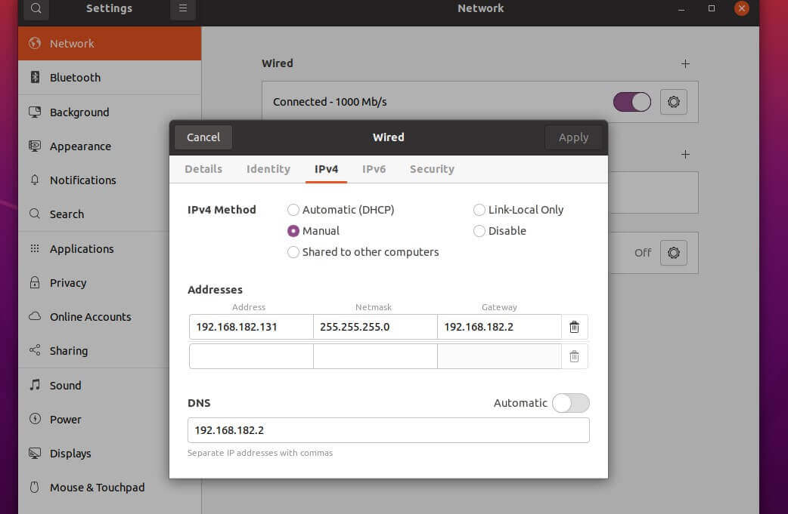

VMware 虚拟机 NAT 网络下配置端口转发到主机
今天安装了 Ubuntu 虚拟机用来做 node.js 开发，在选择网络模式时我选择了 NAT 模式，因为这样可以在主机处于不同网络环境下使虚拟机都有着同一个 IP 地址，方便管理。
但是在此时中发现，虚拟机可以正常访问主机及外网，但是主机无法通过分配的 NAT 地址来 ssh 访问虚拟机。查询后发现这是正常现象。可以通过设置端口转发来将虚拟机端口映射到主机端口来实现对虚拟机的访问。
首先给虚拟机设置一个静态 ip 地址：

然后打开虚拟网络编辑器：
选中 NAT 对应的网卡，这里是 vnet 8，点击 NAT 设置：
在端口转发栏点击添加：
设置要转发到的主机端口及对应虚拟机 IP 和端口等信息，这里我需要转发 ssh 的 22 端口到主机的 2222 端口：
点击确定保存设置即可。
设置好后就可以通过访问主机本地 2222 端口实现 ssh 访问虚拟机了。可以根据需要设置多个端口转发。
标签：无